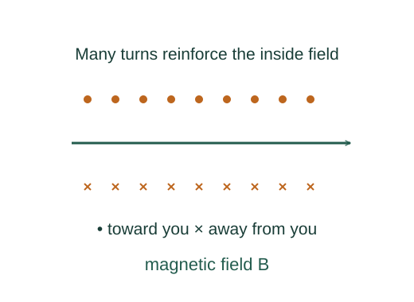

Derive the ideal solenoid field
A long tightly wound solenoid has an approximately uniform axial field inside. An Ampèrian rectangle converts that geometry into a simple relation between field and turns per length.
What the symbols mean
n = N/ℓ: turn density; I: coil current; ℓ: winding length; B: magnetic flux-density magnitude.
When this applies
Very long, closely wound solenoid with steady current and an air or vacuum core, evaluated well away from the ends.
Developing the argument

Describe the ideal symmetry
In the infinite-solenoid limit, the field is axial and constant inside; the exterior field vanishes. A finite long solenoid approximates this near its middle.
Draw a rectangular integration loop
One long side of length a lies inside parallel to the field, and the other lies outside. The short sides are perpendicular to the field and add no circulation.
Count threaded current
The loop encloses na turns, each carrying I. Ampère’s law therefore sets its circulation to μ₀naI.
A closer lookHow is Ampère’s law evaluated with symmetry? ↗Cancel loop length
The arbitrary integration length a disappears, leaving the field determined by current and turn density.
A worked example
For n = 1000 turns/m and I = 2 A, the ideal interior field is about 2.51 mT.
Derivation behind this calculation ↗A point to keep straight
The field near the ends is not uniform and the external field is not exactly zero for a finite coil. Magnetic cores require a material-response model.
Check the assumptions and derivation ↗